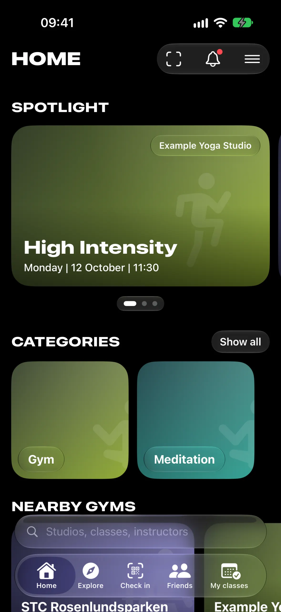
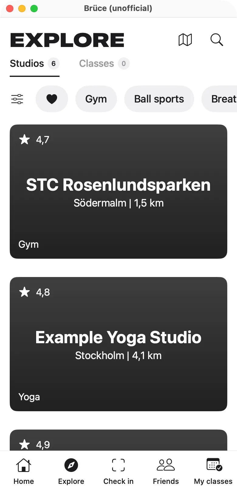
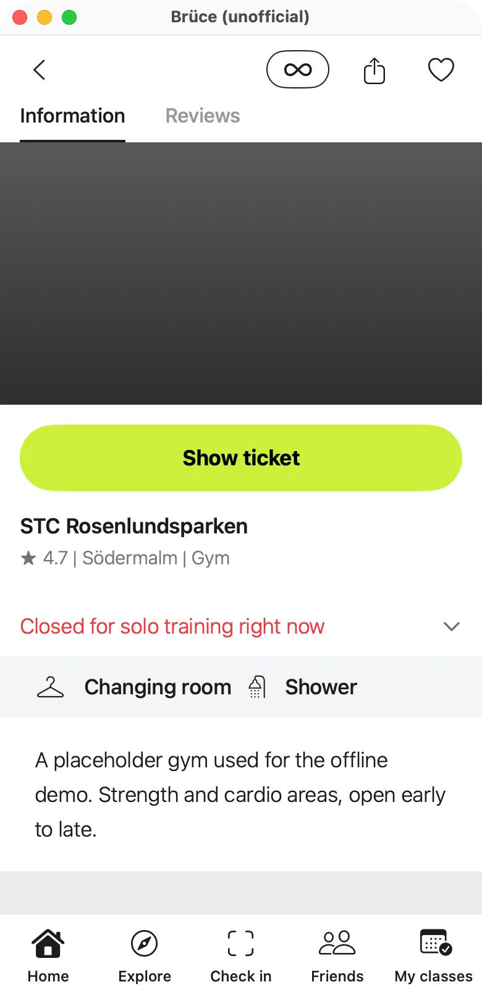

Liquid Glass, all the way
Built for iOS 26: a glass tab bar that shrinks as you scroll, glass toolbars and sheets, lime prominent buttons and a full-screen camera check-in. Light and dark.
Open source · iPhone + Mac · MIT
Brüce is a hobby-built, native SwiftUI client for your own Bruce Studios membership: iOS 26 Liquid Glass on the iPhone, a phone-sized window on the Mac, and a documented map of the HTTP API underneath.
Unofficial. Not affiliated with or endorsed by Bruce Studios AB. Not on the App Store; build it yourself. Read the notice.

Home
Features
Built for iOS 26: a glass tab bar that shrinks as you scroll, glass toolbars and sheets, lime prominent buttons and a full-screen camera check-in. Light and dark.
Scan the door QR code, or check in with one tap from a suggestion: a booked class with an open window, the nearest studio, or your last visit. Always confirmed first.
Every live studio and the city-wide class schedule, with filters and search. Draw your own outline on the map and filter studios and classes to it, then show or rename it later. Areas stay on your device.
A booking-rules sheet shows the book, cancel and check-in windows for each class before you commit. Join waitlists or jump to similar classes nearby when a class is full, bookmark classes and see friends' upcoming classes.
Studio pages bring ratings and reviews, opening hours, alerts, facilities and per-studio visit limits. Descriptions render as Markdown and translate on the device. After a check-in, your ticket is one tap away.
Both apps share BruceCore: API client, models, Keychain session, app state, booking rules and demo data. Only the views differ.
Every endpoint the apps use, with parameters, response shapes and the booking, check-in and visit-limit rules, as Markdown and OpenAPI 3.0.
Talks only to Bruce Studios' servers and Apple Maps. Your password is used once to log in; only session tokens are kept, in the Keychain. No analytics.
Screens
Captured in demo mode with fictional data. No real members, no personal data.
A 390×780 phone-sized window that brings the same screens to macOS 14+, including camera QR scanning with AVFoundation and Vision, and freehand area drawing with the mouse. swift run and go.


How it works
The API was mapped by watching the author's own account, nothing more.
Normally, on the author's own phone and membership: browse, book, cancel, check in.
HTTPS traffic was recorded with Charles Proxy on the author's own device and account.
Endpoints, parameters and response shapes, with evidence references. Anything not observed is marked as such.
SwiftUI apps that make the same kinds of requests at a similar rate as the official app.
API map
Base URL https://api.bruce.app/v52/, one X-Access-Token header. Examples use placeholders or public studio data.
Every observed endpoint with request and response shapes, booking and check-in rules, visit limits, and what has not been observed.
Swagger UIBrowse the OpenAPI description in Swagger UI. Read-only: the "try it out" buttons are switched off.
OpenAPI 3.0The raw spec, for your own tooling: code generators, linters or another viewer.
curl -s 'https://api.bruce.app/v52/studio/filter?filter[status][in]=live&filter[country_code][eq]=SE&limit=3&locale=en' \
| jq '.studios[] | {id, name, vicinity}'Build it yourself
No third-party dependencies, only Apple frameworks. There is no App Store build; you run your own.
git clone https://github.com/djui/bruce.git
cd bruce/Bruce-MacOS
swift build
swift run BruceMacOScd bruce/Bruce-iOS
open BruceiOS.xcodeproj
# or from the command line:
xcodebuild -project BruceiOS.xcodeproj -scheme BruceiOS \
-destination 'platform=iOS Simulator,name=iPhone 18 Pro' build
# devices: copy Config/Local.xcconfig.example to Config/Local.xcconfig
# and set your own DEVELOPMENT_TEAM and bundle ID# macOS
BRUCE_DEMO=1 BRUCE_SCREEN=studio swift run BruceMacOS
# iOS simulator (after building and installing)
SIMCTL_CHILD_BRUCE_DEMO=1 SIMCTL_CHILD_BRUCE_SCREEN=studio \
xcrun simctl launch booted net.dauernheim.bruceHeads-up: outside demo mode there is no dry run. Book, Cancel and Check in send real requests for your account, with the same consequences as in the official app.
Brüce is a personal hobby project. It is not the Bruce Studios app, and it is not affiliated with, endorsed by or supported by Bruce Studios AB. It may stop working whenever their API changes. You need your own Bruce Studios membership to use it.
"Bruce Studios", "Bruce", their logos and the look of the official app are trademarks or property of Bruce Studios AB; no rights to them are granted. Studio names, photos, schedules and reviews are loaded at runtime from Bruce Studios' servers and are not redistributed here. The Ü mark on this page is an original design. The MIT license covers only the code and documentation written for this project.